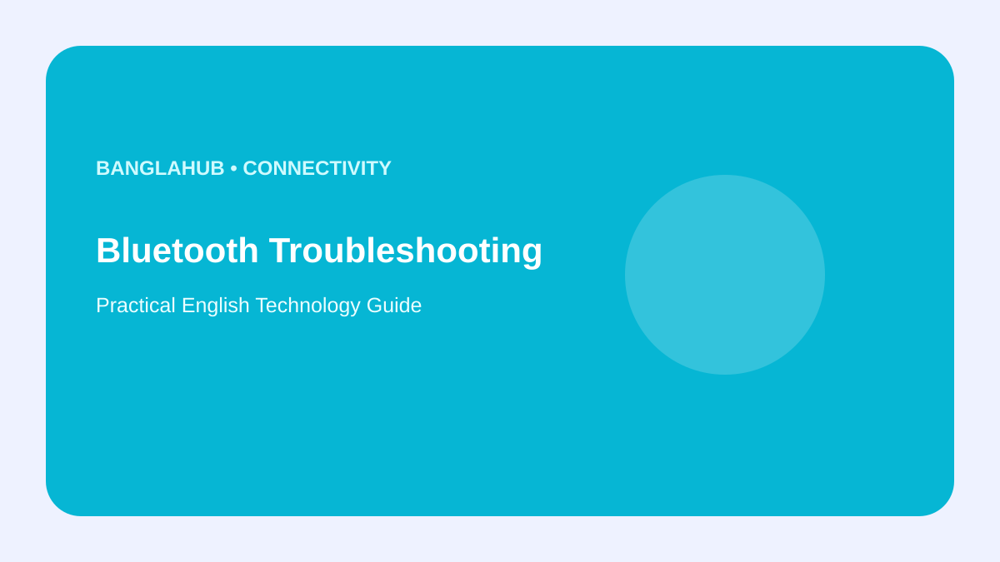

CONNECTIVITY
Bluetooth Not Working on Your Phone? A Step-by-Step Fix

Bluetooth problems are often caused by pairing state, distance, battery level or a saved connection that has become inconsistent.
Before resetting everything, work through a short checklist and test another accessory when possible.
Check pairing mode
Turning Bluetooth on is not always enough. Many headphones, speakers and cars have a separate pairing process and may already be connected to another device.
Forget and pair again
If a saved connection is stuck, forget the accessory in Bluetooth settings and pair it again while keeping the devices close together.
Restart both devices
A simple restart can clear temporary connection states. Also check that the correct audio output is selected when sound is the problem.
Update before resetting
Install official phone and accessory updates. Use a network-settings reset only after simpler steps fail because it can remove saved connections.
FAQ
Why does Bluetooth connect but play no sound?
Check the selected audio output and the accessory's volume, then reconnect if necessary.
Why won't an accessory appear?
Check pairing mode, battery level, distance and whether it is already connected elsewhere.
Bottom line: Pair carefully, restart when needed and use official support for persistent problems.
Editorial note: Menu names vary by phone model and Android version.